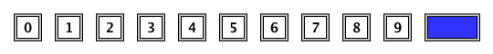
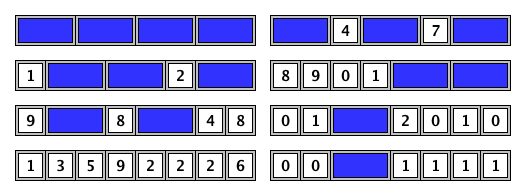

We want to tile a board of length $n$ and height $1$ completely, with either $1 \times 2$ blocks or $1 \times 1$ blocks with a single decimal digit on top:

For example, here are some of the ways to tile a board of length $n = 8$:

Let $T(n)$ be the number of ways to tile a board of length $n$ as described above.
For example, $T(1) = 10$ and $T(2) = 101$.
Let $S(L)$ be the triple sum $\sum_{a, b, c}\gcd(T(c^a), T(c^b))$ for $1 \leq a, b, c \leq L$.
For example:
$S(2) = 10444$
$S(3) = 1292115238446807016106539989$
$S(4) \bmod 987\,898\,789 = 670616280$.
Find $S(2000) \bmod 987\,898\,789$.
solve(max_limit=2) → ?solve(max_limit=2000) → ?